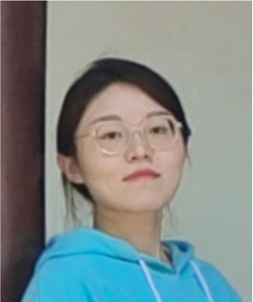
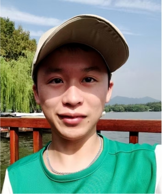
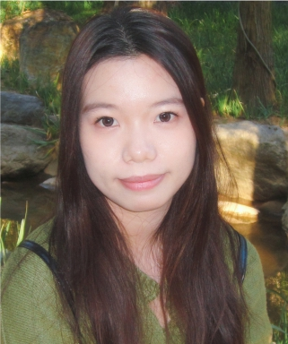
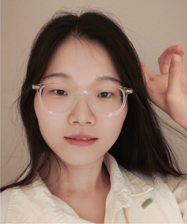

邢明歌
硕士生 (共同指导)
（微生物时间序列）

丘逸凡
硕士生
（微生物与碳）

麦慧贞
硕士生
（微生物相互作用）

王娜娜
硕士生
（微生物迁移）
以往成员
- - 梁晋玮 (本科, 暨南大学；在读硕士)
- - 李慧珊 (硕士, 南方科技大学；在读博士)
- - 吴家琦 (硕士, 南方科技大学；公司工作)
- - 饶佐民 (硕士, 南方科技大学；公司工作)
- - 闫梦雪 (本科, 南方科技大学；欧洲硕士毕业)
- - 卢航 (科研助理, 南方科技大学；欧洲在读博士)
- - ......